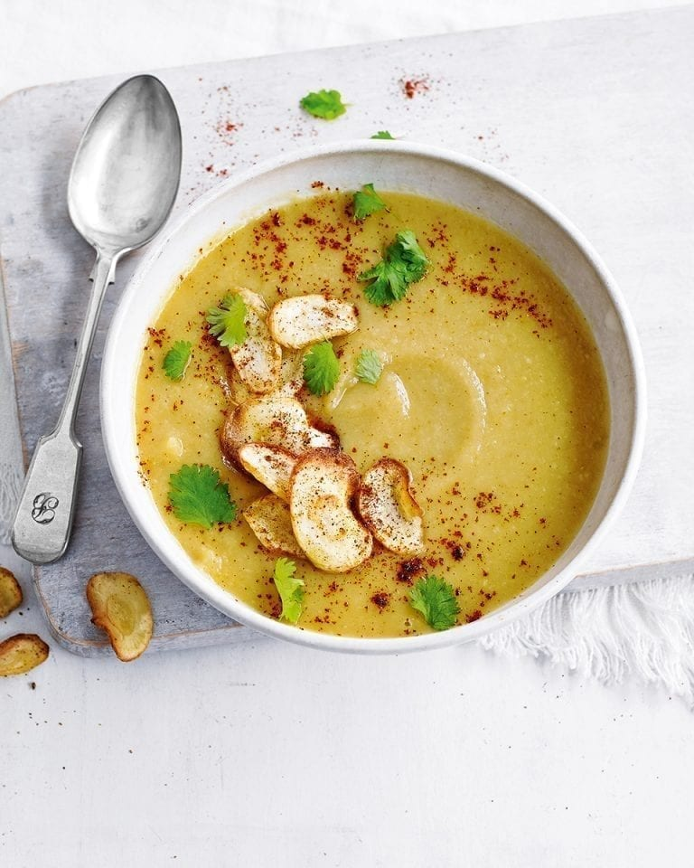

Curried Parsnip Soup

A hearty winter soup with a curry twist
Ingredients
- 4 parsnips
- 2 tbsp olive or rapeseed oil
- 1 onion
- 2 garlic cloves
- 2 tsp curry powder (medium or mild)
- 750 ml vegetable stock
- 50 ml dairy-free cream
Method
- Preheat the oven to 180°C / 350°F / Gas Mark 4.
-
Peel the parsnips and cut into wedges, and place in a roasting tin or baking tray.
Peel the onion and slice thickly and add to the tray, then add the garlic cloves - whole and unpeeled.
Drizzle over the oil, add the curry powder and season with salt and black pepper,
then toss everything together until the vegetables are fully coated with oil.
- Roast for 30 minutes until the parsnips are golden brown and soft. Remove the garlic cloves (keep them for later),
and set aside.
- Bring the vegetable stock to the boil in a large saucepan. Tip in the roasted parsnips and onion, then squeeze the
soft flesh out of the roasted garlic cloves, add to the pan and discard the skin. Boil for 4-5 minutes, then remove
from the heat, stir through the cream then blitz to a very smooth purée with a hand blender or in a blender / food
processor. Taste and adjust seasoning as required.
-
If you wish to make parsnip crisps for a garnish, simply peel strips off a parsnip with a potato peeler. Heat a little
oil in a frying pan and fry the strips gently until they are just turning golden brown. Watch carefully - they can burn
in seconds! Sprinkle with salt then remove from the pan and keep on kitchen paper until just before serving so they stay crisp.
- Serve the soup with a drizzle of cream and your parsnip crisps.